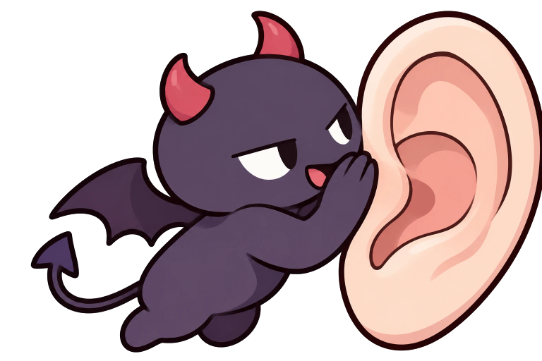

칼 융 · 필 스터츠 · 배리 마이클스 · 빅터 프랭클에서 착안관계를 방해하는 내 안의 작은 악마
우리 모두의 귓가에는 속닥이가 살아요. 누군가 말을 건네면 그 말을 몰래 비틀어서 "저거 너 무시하는 거야", "넌 또 실수했어" 하고 속닥이죠. 그러면 우리는 상대가 한 말보다 속닥이가 전한 말을 듣게 돼요. 지금 당신의 속닥이는 얼마나 끼어들고 있을까요?
무엇을 재는지는 결과 화면에서 자세히 알려 드려요.
속닥이가 어떤 재료로 속닥이는지, 그리고 내가 얼마나 알아차리는지예요. 괄호 안은 칼 융의 개념이에요.
이 결과는 임상 진단이 아니며, 타당도 검증 전의 자기이해용 검사에서 나온 참고 정보입니다. 점수 구간과 해석은 이론에 기대어 임의로 정한 것이고, 다른 사람과 비교할 수 있는 규준(평균 자료)이 없습니다. 그날의 기분이나 최근 일에 따라 결과가 달라질 수 있어요. 필 스터츠·배리 마이클스의 개념에서 착안했지만 저자들과 관련 없는 비공식 검사입니다.